roof
216 x 116 native pixels; up to 64 coloursIntact upper roof tier and its painted underside; the larger lower roof is obscured by trees. The photographed finial and asymmetry are retained.
Variants and mask review
Sources: temple_pavilion
Newer comparison: Full Blender temple kit, normal lighting and live 3D viewer / Scene screenshots
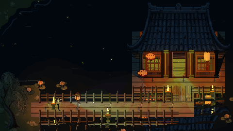
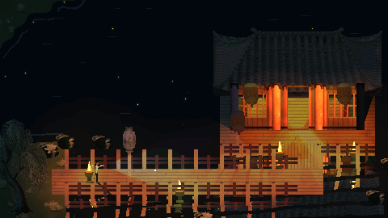
Brighter colour inspection / Inside / roof hidden / Storm / Lightning
Roof camera angles in the game / Roof native pixels and 2x review / Editable Blender model and rebuild instructions
Intact upper roof tier and its painted underside; the larger lower roof is obscured by trees. The photographed finial and asymmetry are retained.
Variants and mask reviewSources: temple_pavilion
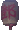
Whole photographed Tang-clan paper lantern. Uniform 1.45x linear exposure compensation; the real lettering is retained, not reconstructed.
Variants and mask reviewSources: tang_lantern
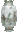
Walters 49.2829, Qing porcelain lantern, shown as a stationary pedestal prop (not swinging paper). Pierced crown and base are masked separately.
Variants and mask reviewSources: walters_lantern
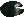
Whole foreground pad with its natural radial slit and mottled highlights. No water is retained.
Variants and mask reviewSources: pads_pond
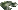
Second whole pad; photographed obliquely, retained at that angle.
Variants and mask reviewSources: pads_pond
White flower photographed amongst old, weathered pads; selected over the more saturated purple flower for the scene.
Variants and mask reviewSources: white_lily
Optional purple flower. Colour selection inside a hand-authored silhouette excludes water and nearby stems.
Variants and mask reviewSources: water_lily
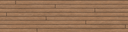
Photographic scan, rotated grain and perspective-compressed board strips; thin authored joints.
Variants and mask reviewSources: Wood058
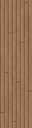
Same board atlas rotated 90 degrees.
Variants and mask reviewSources: Wood058
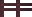
Actual timber photo fragments placed on the existing open rail geometry.
Variants and mask reviewSources: tang_lantern
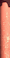
Photographed worn red pillar; a four-corner perspective correction straightens the camera convergence.
Variants and mask reviewSources: pavilion
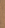
Narrow vertical timber scan crop.
Variants and mask reviewSources: Wood058
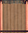
Timber scan, actual painted fascia and red post crops; aperture geometry stays in the renderer.
Variants and mask reviewSources: Wood058 temple_pavilion tang_lantern pavilion
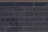
Actual grey temple brickwork crop for wall footprints.
Variants and mask reviewSources: tang_lantern
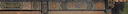
Painted beam fragment, available as a reusable architectural trim.
Variants and mask reviewSources: temple_pavilion
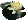
Composite of intact photo cutouts; no invented foliage.
Sources: pads_pond white_lily
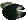
Composite of intact photo cutouts; no invented foliage.
Sources: pads_pond
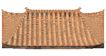
Photographic tile/wood fragments on a real curved hipped roof; orthographic elevation 30 degrees. Authored geometry, not a recovered 3D scan.
Variants and mask reviewSources: temple_pavilion tang_lantern
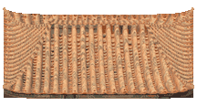
Photographic tile/wood fragments on a real curved hipped roof; orthographic elevation 40 degrees. Authored geometry, not a recovered 3D scan.
Variants and mask reviewSources: temple_pavilion tang_lantern
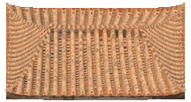
Photographic tile/wood fragments on a real curved hipped roof; orthographic elevation 50 degrees. Authored geometry, not a recovered 3D scan.
Variants and mask reviewSources: temple_pavilion tang_lantern